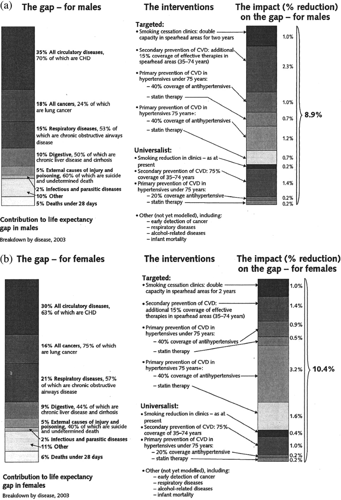

It's not just pills and potions? Depoliticising health inequalities policy in England
Kaveri Qureshi
In England, health inequalities policy shifted during the Labour term (1997–2010)
from initially strong commitments to tackling the ‘upstream’ social determinants of
health to a technically-driven emphasis on lifestyle risk factors and healthcare access.
This multi-sited study, based in and around Westminster (2006–2007), extends our understanding of how political context influences policy-making by drawing from anthropological studies of policy. Qualitative material from central government is put
into conversation with theory concerning policy as zones of practices. The paper
explores the bristly process through which public health, healthcare and corporate
interests vied to shape the political agenda for health inequalities; the selective use of
evidence by civil servants in accordance with their perceptions of what politicians conceive to be electorally palatable; the silencing of critique of the dominant narrative
about evidence-based policy; and how technical aids developed a life of their own – as
a result of which, health inequalities policy ended up being depoliticised.
INTRODUCTION
Between 1997–2010 the Labour party government in the UK made a number of rhetorically powerful statements about reducing social inequalities in health (Evans 2002; Exworthy, Blane, and Marmot 2003). It commissioned two expert reports on the underlying social epidemiology (Acheson 1998; Marmot 2010), funded various research compendia
to review the available evidence and theories (Gordon et al. 1999; Asthana and Halliday
2006), devised targets and implemented cross-government policy interventions to tackle
health inequalities (DOH 2003). Whilst the Labour government in its first term made an
initial commitment to tackling the ‘upstream’ structural determinants of health, it traversed
over its years in power to a focus on ‘downstream’ individual lifestyle factors (Smith et al. 2009). Towards the end of Labour’s third term in government the data showed that, as for
wider social inequalities, health inequalities in the UK had continued to widen since 1997.
National data to 2008 indicated that the gap in life expectancy between the fifth of local
authorities with the worst health and deprivation indicators and the population as a whole
had increased by 7% for men and by 14% for women, whilst the gap in infant mortality
between routine and manual occupational groups and the population as a whole had increased from 13% to 16% (Mackenbach 2011). In May 2010, a Conservative–Liberal Democrat coalition formed a new government and made political hay of Labour’s inability to deliver substantial reductions in health inequalities, making it a case for NHS reforms (Cameron 2010; Clegg 2011). Subsequent data released from the Department of Health
indicated that whilst the life expectancy gaps had continued to increase, by 2007–2009 the
infant mortality gap had actually declined from 13% to 12%. However, the later data on
infant mortality did little to shift the overall conclusion that policies to reduce health
inequalities under Labour were a ‘missed opportunity’ (Bambra 2012, 662).
This paper turns to qualitative material collected in and around Westminster in 2006–
2007 to shed light on the dynamics underlying the Labour government’s shift from rhetorically strong commitments to tackling the ‘upstream’ social determinants of health, to a
technically-driven emphasis on culture-lifestyle-behavioural risk factors, in which a construction of the policy problem in terms of social inequalities had shifted ambiguously to
one of deprivation and helping poor people to help themselves. It is argued that insights
from the anthropology of policy might assist in understanding how research evidence on
health inequalities was listened to in particular ways in formulating a political agenda,
but also systematically evaded.
Health inequalities policy surfaced in the UK in the context of a wider drive towards
‘evidence-based’ policy in the 1990s, which was embraced by the incoming Labour government as part of a deliberate effort to ‘depoliticise’ politics – signalling a new, supposedly
‘post-ideological’ approach to public policy-making in which evidence would be put at the forefront of decision-making, replacing ‘outdated ideology’ with a concern for ‘what works’ (Davies, Nutley, and Smith 1999). In the field of health inequalities, the drive for evidencebased policy reignited interest in long-standing questions concerning the relations between research and policy. Are researchers and policymakers ‘two communities’, as Caplan
(1979) proposed, with distinct languages and epistemologies? What kinds of interactions
take place among the various parties that draw governments’ attention to problems, promote
solutions and lobby policymakers – and are these knowledge-based ‘epistemic communities’
(Haas 1992), interest-based ‘policy networks’ (Marsh and Rhodes 1992) or complex sub-systems of interacting ‘advocacy coalitions’ (Sabatier and Jenkins-Smith 1993)?
Exworthy (2008) and Exworthy, Blane, and Marmot (2003) make use of Kingdon’s
(1995) formulation of the ‘policy streams’ to understand how health inequalities policy
has developed – working with the idea that the ‘policy window’ opened when three
‘streams’ were coupled; ‘problems’, ‘policies’ and ‘politics’. They argue that the accumulation of evidence and the emergence of small coalitions of advocates allowed a consensus to develop around health inequalities as a policy problem. However, the evidence
base regarding policies to tackle them was weak, and there was only a partial congruence
with the values of the Labour government, which had little appetite to address inequality,
rather than poverty per se, by making strong efforts at redistribution.
Smith (2007) confirms that ideas from research literature helped to construct health
inequalities as a policy problem, but the political context during the Labour term – which
the researchers and policymakers she spoke to described as ‘neoliberal’ – prevented these
ideas from being picked up in formulating policy outcomes. Smith suggests what happened
is that only the politically palatable aspects of ideas were travelling into policy. She suggests that particular constructions of health inequalities were functioning as what McLennan
(2004) calls ‘vehicular ideas’ – vague enough to move fluidly through policy actors and
documents, but shifting their meaning in the process. Blackman (2007) and Blackman et al.
(2009) expand usefully on Smith’s interviewees’ appraisal of the ‘neoliberal’ political context, showing how the incorporation of health inequalities within mainstream Department
of Health and NHS performance management resulted in ‘the paradoxical situation of a
medical rather than a social model of public health, and a key role for pharmaceutical companies in a new definition of prevention based on drugs’ (Blackman 2007, 902).
These studies are important, as they attend in increasingly complex ways to the political context in which research evidence is picked up and worked upon in policy networks.
However, to elucidate how and why evidence may be used selectively, transformed or
deployed in ways that are politically expedient, this paper turns to the anthropology of
policy and in particular, to its insistence on following policy beyond the utterances and
discourses contained in policy documents through to the bureaucratic procedures of planning and implementation. Bernard Schaffer’s (1984) prescient notion of three ‘zones of
policy practices’ influencing the outcomes of policy – the messy processes of agenda-setting, bureaucratic establishment and allocation – is used to structure the paper. Agendasetting or authorisation is the framing of a policy problem, whilst establishment can be understood as institutional management, and allocation refers to resources and their politics.
The implications of adopting such an approach to policy are brought out in the discussion.
METHODS
This paper presents findings from a multi-sited study investigating health inequalities in
England, which adopted the ethnographic approach of ‘following the policy’ – ‘its discourse, prescription, and programmes – through to those affected by the policies’ (Wedel
et al. 2005, 40). As part of wider doctoral research into chronic illness, the author worked
as a researcher for four months on a placement at a policy-advisory section of the English
civil service. She shared in the working life of the policy-advisory section – carrying out
desk research, arranging consultations to sequester expert opinion and relevant grey literature, and drafting a report that was passed between colleagues for refinement and checks
for ‘political neutrality’ – but also maintained fieldnotes.
The position offered privileged access to the actors around central government who
set the political agenda on health inequalities and the senior bureaucrats who responded
to it, applying their own technical skills. The author attended parliamentary debates in the
House of Commons as well as the less prominent but equally important all-parliamentary
groups, committees, consultations and launches that continually take place around Westminster. She attended conferences and dissemination workshops at which academic
researchers interacted with civil servants. She interviewed more than 20 senior civil servants and lobbyists from the regulatory bodies, think tanks and voluntary sector that surrounded central government. The main professional capacity of the interviewees at the
time of the fieldwork (2006–2007) is given in Table 1.
‘Studying up’ involves studying those with ‘the power to exclude themselves from the
realm of the discussable’ (Cooper and Packard 1997, 5). This raises methodological and
ethical questions. During the research, the author did not seek informed consent from all
those she observed, as it would have been impractical and would also have increased the
reactivity of the participants. However, those who were interviewed and quoted in this paper were informed about the wider research and asked for their verbal consent to participate in the study and for detailed notes to be taken. Ethical approval was granted by
the London School of Hygiene and Tropical Medicine.
ZONE OF AGENDA-SETTING
Contrary to the work on research-policy relations, which tends to assume that the accumulation of evidence is the key to an issue coming onto the policy agenda, academic researchers
in the field of health inequalities were aware of the limitations on the implications their
work had for policy. The academic interviewees echoed Exworthy (2008) and Exworthy,
Blane, and Marmot (2003) in arguing that the long-term and multi-factorial character of the
social determinants of health, and the complexity of the pathways revealed by their research,
were inimical to the process of policy-making, which they saw as inherently myopic and
tunnel-visioned. Moreover, as Smith (2007) also found, they suggested that the scope for a
‘values-based approach’ was limited by a neoliberal political culture emphasising
‘efficiency’ savings.
It’s a long-term issue – it’s about an entire life-course, from infancy to old age. That is a significant challenge to policy and government, who work on four-year timescales and not generations ... //... If the evidence is lacking or unclear, should that stop policymakers from
doing anything? There’s a case to be made for a values-based approach, for saying outright
that equity should be the most important consideration. But what we’re seeing is an emphasis
on efficiency – particularly since the Gershon report, that’s been the dominant focus.
(University researcher)
The fieldwork confirmed that academic research is not the only source that shapes political agendas. A seminar on ‘Tackling health inequalities in the UK’, which took place in a
sober wood-panelled room of the Palace of Westminster ahead of the debate on public
health, which was scheduled in the House of Commons for the afternoon of the 5 December 2006, provides a revealing viewpoint over the kinds of interactions between researchers, other interest groups and policymakers that influenced the political agenda for health
inequalities. The seminar was convened by an all-parliamentary advisory body intended
to deliver balanced and impartial information to parliamentarians from across the political
spectrum. At this seminar, however, an academic advocating a material-structural, relative deprivation approach to reducing health inequalities vied for influence against an academic employed as a representative for a major high-street pharmacy chain – illustrating
the fluid professional movement between public and private sector characteristic of this
period (Leys 2006). His messages about expanding the role of pharmacies in promoting
lifestyle change, primary prevention and early-stage condition detection and control were
picked up enthusiastically by the chair, who summed up the proceedings as follows;
We need to respect individual choice. It’s a fact that healthy lifestyles are not the most interesting. As a state, we need to help guide people’s behaviour but also respect choice, which
gets us back to markets – partnerships with the private sector are going to be increasingly
important. (Member of the House of Lords)
The Commons debate that followed that afternoon was further illustration of the crowded
policy networks influencing health inequalities. The Minister of State for Public Health
gave a speech that met with laughter and applause in the government benches, describing
Conservative attempts to criticise Labour’s efforts on public health and health inequalities
as ‘like that of an Ebenezer Scrooge who has been awoken in 2006 to the need to change
by the nightmare of a Tory Christmas past’ (Hansard 5 December 2006, Column 168).
She argued that the health inequalities the Labour government had inherited were the
4 K. Qureshi
product of Conservative policies ‘consigning a generation to the scrap-heap’ (Hansard 5
December 2006, Column 169). Beyond these rhetorical flourishes, rather than focusing on
wider social inequalities the debate wove instead between efforts to promote lifestyle
changes – smoking, diet, exercise – as key problems for public health; the underfunding,
staff shortages and long waiting lists of the NHS; and the stress on individual choice and
efficiency savings. From a Conservative MP came a call for pharmacies to be commissioned for smoking cessation services; from a Liberal Democrat, for pharmacy staff to be
commissioned to act as ‘health trainers’; and from a Labour MP, for commissioners to
draw on weight-loss companies and the pharmaceutical industry for health promotion.
As this vignette suggests, the Labour party government in 2006–7 was continuing to
lend an ear to material-structural explanations of health inequalities and make rhetorically
powerful statements about the social determinants of health, yet the political agenda was
crowded with culture-lifestyle behavioural approaches and medical interventions, fitting
within the government’s overall programme on patient choice and efficiency (Leys and
Player 2011). The following section explores how this political agenda shaped the framing of health inequalities as a policy problem, and the ways in which health inequalities
came to be bureaucratically established.
ZONE OF ESTABLISHMENT
In 2006–2007, during the period of fieldwork, the Equalities Review was drawn into the
process of operationalising the evidence base on health inequalities, as happened with other expert reviews such as the Acheson report (1998) and later the Marmot report (2010).
The Equalities Review had a wider remit than these other expert reports. It was an independent panel commissioned by Tony Blair to the Cabinet Office in 2005, to inform cabinet ministers on the causes of persistent inequalities and discrimination in British society.
The Equalities Review was to produce recommendations for the development of a unified
Equality and Human Rights Commission to start in 2007, which would streamline the six
‘equality streams’ of race, disability, gender, religion, sexuality and age. Health inequalities became an unexpected priority for the Equalities Review amid a political furore over
racial inequalities in mental healthcare in 2005, with the publication of the Independent
Inquiry into the institutionalisation and death of black psychiatric inpatient Rocky
Bennett, and the subsequent policy Delivering Racial Equality. The focus on health
inequalities threw up difficult questions for the Equalities Review, as it highlighted a
discrepancy between the research literature on health inequalities, which focuses on areabased inequalities and social class, and the equalities strategy focusing on its ‘streams’.
The negotiations effected by the Review team shine further light on the political considerations that undergirded the operationalising of the evidence base by civil servants. To initiate the Review process, an academic social policy expert was commissioned to write a conceptual paper on the measurement of equalities. She developed a framework that
avoided cutting up the population by the six equalities strands, which instead used Amartya
Sen’s (1985) ‘capabilities’ approach and tried to identify the structures that enable individuals to have the opportunity to live ‘fair and healthy lives’ – the definition of which was to
be explored later through focus groups. She struggled with the lack of intellectual coherence between the selection of the equalities streams, and particularly the absence of social
class. She tried to advocate for the inclusion of social class amid the other equality streams;
The selection of these characteristics is not random but is because they share two features: they are treated as beyond individual control, and they are a source of significant discrimination and inequality. Using these two criteria, one key omission from the list of characteristics for analysis is social class. Social class is determined very largely by family of origin and it is therefore
Anthropology & Medicine 5 reasonable to treat it as beyond individual control; it has also been a source of significant discrimination and inequality across most aspects of life since the advent of class society. There is a compelling case for including social class alongside other characteristics for analysis. (University researcher – Equalities Review 2006, 10)
However, the background paper was received in a lukewarm manner by the Equalities
Review interim board, which ignored the comments about social class as ‘the parameters
were already set’. The core team dismissed the capabilities approach as a ‘red herring’ –
very complicated ‘high-powered stuff’, but it made little difference in practice to how
they would think about the outcomes of inequalities.
The interim report said that the framework was too complex. It took a high-powered steering
group of academics to operationalise the capabilities and think about a different way to measure equality. We get a sense of what’s important, of what needs to be in there – health, education, employment. But now we need focus groups to show us the important things to put in
the basket of measures. (Senior civil servant)
Despite the strong rhetoric of cabinet ministers at the time, the construction of health
inequalities can be seen to undergo a transformation as it entered the commitments of
central government. Social class was removed from the agenda as a driver of inequality
amenable to collective action through a politics of redistribution, and the complex interplay of structures in society that impact on individual health are obfuscated by a complicated measurement framework that critics have suggested ‘could be translated into policy
in ways which merely shift the responsibility for poor health onto individuals and communities who fail to develop the social networks required to ensure “resilience” against
health problems’ (Bambra et al. 2011, 403). Importantly, this transformation in the meaning of inequalities appears to have taken place concretely under the influence of cabinet
politicians. The senior civil servant responsible for examining inequalities in health
emphasised the research evidence on the wider social determinants, but spelled out the
political constraints on the Review’s recommendations concerning redistributive welfare;
The Panel want to re-state the case for action – I mean the moral imperative, the social justice
argument about how the state should be looking after the most vulnerable and of course, the
economic case. We’re not going to suggest redistribution. I know there’s Richard Wilkinson’s
work, the examples of Cuba, the monkeys and all that. But this government is not about that.
The tax and benefits system is out of our scope – that’s being reviewed separately as part of
the budget and comprehensive spending reviews. (Emphasis added) (Senior civil servant)
She further explained that whilst the recommendations were supposed to be independent,
they had to be first approved by key cabinet ministers who would be responsible for acting on the review. This involved a negotiation between various ministers with their own
prerogatives: ‘[minister’s name] will want to push the boundaries... but we have to develop recommendations that will have broad political support’. Her cautious recognition
of the political constraints acting on the Review demonstrates that, contrary to the ‘two
communities’ view of researchers and policymakers, it does not seem to be for want of
dissemination or lack of engagement that research evidence on health inequalities has
failed to be translated into policy. Rather, ‘independent’ advice is shaped or constrained
according to policymakers’ perceptions of what politicians conceive as practicable and
for which there would be an electoral appetite. The selection and operationalisation of the
evidence-base is therefore a political process holding a strong grip over the policies
adopted to tackle health inequalities, and limiting the discussion of alternatives. What is
6 K. Qureshi constructed is ‘policy-based evidence’ rather than evidence-based policy (Marmot 2004; Naughton 2005), even in the work of a supposedly independent commission.
ZONE OF ALLOCATION
In the zone of allocation, Schaffer (1984, 161) describes ‘vivid bureaucratics’ in the politics
of budgeting. In the field of health inequalities in England, technical aids to resource prioritisation could be seen as becoming progressively central. As Blackman and colleagues (2009)
have suggested, this came as a particular result of the introduction of targets. The 2000 NHS
Plan and the 2001–2004 Public Services Agreements announced that the Department of
Health was charged with delivering two specific national targets on health inequalities. The
targets were initially framed as a combination of area-based inequalities and social class, focusing on (1) reducing the gap in life expectancy between the fifth of the health authorities
with the worst health and deprivation indicators and the population by 10%, and (2) reducing the gap in infant mortality between routine and manual occupational groups and the population as a whole by 10%, both with a deadline of 2010. The two targets committed to in
February 2001 were subsequently altered in the 2004 Spending Review by the Treasury,
and combined into a single Public Service Agreement focusing on area-based differences.
Smith et al. (2009) have shown how this shift in the targets maps comprehensively onto a
shift over time in the conception of health inequalities in English policy documents, away
from the ‘social gradients’ in health emphasised by the research literature – which implies
redressing a health slope that cuts across the whole of society – to a problem of health ‘gaps’
or health ‘disadvantage’ resulting from the ill health of poor people or people in poor areas.
Within the DH, the body charged with tackling inequalities was the Health Inequalities Unit (HIU). In keeping with this shifted conception of the policy problem, civil servants at the HIU talked about health inequalities as a property of deprived people or
communities, as in ‘Buckinghamshire does not have health inequalities’ or ‘there are a lot
of health inequalities in Bradford’ – affluence was not seen as fitting into the picture. This
shifted conception had concrete consequences for the responses considered by the HIU
and allowed for the political agenda of tackling inequalities, which implies redressing excess wealth at the top of society, to be weakened into a less controversial agenda of improving the access to healthcare in deprived areas.
Lots of people think ‘this isn’t for the NHS, it’s to do with child poverty’. But as the PSA target is 2010, it makes you focus on people who already have disease – it makes you focus on
how inequitable the NHS is. (Emphasis added) (Senior civil servant)
To meet the targets, the HIU had gone through what appeared to be a technical, evidencebased procedure. They identified the size of the gap they needed to reduce, then they
quantified the major causes of the gap, namely cardio-vascular disease, cancers and respiratory disease – the ‘three big killers’. Then they calculated the gains that could be gained
through particular interventions, according to the available evidence, and planned the
mixture of interventions that would be required to close the gap in time for the deadline
of 2010. As one of the civil servants explained,
We need something that will categorically have an effect within the five year targets. Using
the evidence base we’ve gone for things that will have an impact on the targets ... If there
are immediate fixes, we will use them. (Senior civil servant)
Their in-house review came up with the diagrams that the HIU referred to as the
‘Coloured Scarves’ or ‘Dr Who Scarves’, illustrated in Figure 1.

Figure 1. The ‘Coloured scarves’. (a) Causes of the male life expectancy gap and relevant interventions. (b) Causes of the female life expectancy gap and relevant interventions.
Source: DOH (2007), p.18.
The ‘Coloured Scarves’ illustrate the causes of the life expectancy gaps, and the percentage reduction in the gap that could be expected from a series of six ‘high impact
changes’ to reduce inequalities. The ‘high impact’ changes are technical solutions focused explicitly on the targets, such as identifying the gap in their local authority; reducing smoking, a risk factor for all of the ‘three big killers’; improving access to statins,
medications to limit the progression of cardio-vascular disease; improving cancer detection; and using ‘health trainers’ and raising people’s expectations to improve the use of primary care. Rather than address the ‘wider determinants’, they focused on lifestylebehavioural and medical interventions.
There’s a focus on cross-government activities as well as, can the NHS deliver statins to the
right group. It’s not just pills and potions. Ultimately we need to have that right combination
of NHS actions and overall poverty issues, all these things play in. But first we need to deliver on the targets. Then we can start seeking a long-term sustainable decrease in health
inequalities. (Emphasis added) (Senior civil servant)
As suggested before, the failure to address the ‘wider determinants’ of health inequalities
did not result from any inability on behalf of the civil servants to understand or access the
research literature, as the ‘two communities’ theory might imply, but from the ways in
which the bureaucratic establishment of the policy problem via targets allowed the response
to be dictated by a technical aid. The civil servants in the HIU were well aware that the social gradients in health would not be impacted by the ‘high impact’ changes, but the targets
gave them a focus on delivering by 2010 rather than addressing ‘wider determinants’. Fixed
on the targets, the HIU had argued themselves into opposition with the academic research,
which they criticised as impractical and excessively focused on the ‘wider determinants’,
which were not amenable to improvement through their own structures:
It’s a very wide topic. Talking about health inequalities is like talking about world peace...
There’s a difference between the targets and the social gradients. Most of the public health
people in this country are so involved in the wider determinants that they forget the basic inverse care law – I mean, the importance of basic health care, which we should be doing anyway. (Emphasis added) (Senior civil servant)
The approach of the HIU was sometimes criticised by other bodies in and around the DH,
for being excessively focused on geographical inequalities in health to the detriment of
social class and relative deprivation. The civil servant heading the unit was said to be
‘holding the ring on the socio-economic stuff’, ‘going for what they can monitor easily,
locally and nationally’, and short-sighted as ‘it’s really the non health-services targets
that will make more of a difference’. However, the HIU would silence this kind of criticism by referring to the ‘Coloured Scarves’;
People think that the target isn’t achievable but we see reasons for optimism... We try to put
over the message that this is achievable, we have some success, we know some of the things
that we need to do and these aren’t complicated, they’re things that we should be doing anyway. (Senior civil servant)
The ‘Coloured Scarves’ can be argued to have their own agency as ‘graphic artifacts’ (Hull
2008) in bureaucratic procedure, as they have their own immediate and tangible effects. The
HIU put these diagrams prominently in all reports and PowerPoint presentations, and they
may frequently be found reproduced in the documents of local health authorities, bulletproofing the plans with the technical rigour of evidence-based decision-making and effecting Anthropology & Medicine 9
a sense of optimism about the prospects for progress. They bear the hallmarks of what the
civil servants studied by Stevens (2011) refers to as ‘killer charts’. These are studied instruments of persuasion, put together by carefully choosing data and restricting the numbers of cases and categories so that ‘the policy implications of the data should be immediately apparent from the graph alone’ (Stevens 2011, 243) – transcending the academic criticism that statistics can’t speak for themselves. The significance of ‘killer charts’ lies in allowing civil servants to tell convincing ‘policy stories’ (Stevens 2011, 243), which exclude uncertainty, complexity or opposition to the narrative that currently predominates in a policy field.
DISCUSSION
Existing studies of health inequalities policy in the UK have established a weakening of
the Labour government’s initially strong commitments to tackling the ‘upstream’ social
determinants of health to a focus on ‘downstream’ individual lifestyle factors and health
service use. This shift has been explained by Exworthy (2008) and Exworthy, Blane, and
Marmot (2003) as the result of a decoupling of the ‘problem’ and ‘policy’ streams from
‘politics’. This perspective assumes a value-free translation of the evidence-base into a
set of recommendations, and points the finger at ‘politics’ for undermining the process of
evidence-based policy-making. By contrast, the material presented here concurs with other students of Schaffer that ‘if public policy “is what it does”, it has to be recognized that
the whole process bristles with politics’ (Harriss-White 2002, 196).
This paper followed health inequalities policy through ‘zones of policy practices’,
which revealed how power and political contestation have influenced the use of evidence
and its operationalisation for policy outcomes. Unlike much work on research-policy relations, which assumes that the accumulation of evidence is key to an issue coming onto the
policy agenda, descriptions of the interactions taking place around Westminster illustrate
that the research evidence on material-structural explanations of health inequalities has
travelled in partial or fractured ways into policy circles – as suggested by Smith (2007).
Moreover, research evidence has to contend with other powerful lobbyists from the NHS
and private providers ranging from pharmacies and weight-loss companies to the pharmaceutical industry. Looking at how evidence was operationalised in the zone of bureaucratic establishment, this paper suggests that it was not for want of dissemination or
engagement that research literature failed to influence policy outcomes, but that evidence
was used by civil servants in accordance with their perceptions of what politicians conceive to be electorally palatable. This was illustrated in the zone of allocation, too, where
targets for health inequalities led civil servants to silence critique of the dominant narrative about evidence-based policy, and technical aids developed a life of their own.
Despite civil servants’ protests that ‘it’s not just pills and potions’, the paper gives further impetus to Blackman (2007) and Blackman et al.’s (2009) suggestion that the shorttermism of performance management has resulted in an undue reliance on pharmacological ‘quick win’ interventions. Rather than redistribution of wealth, it is health that is being
‘pharmacologically redistributed by statins, anti-hypertensives, and nicotine replacement
therapy’ (Blackman 2007, 902). Blackman suggests that the strong audit culture of targets
and performance management is particularly characteristic of the bureaucratic habitus in
England, and less developed in Scotland and Wales. There are lessons to be learned from
debates in global health, where ethnographies have tracked how policies offering
‘capsular promise as public health’ (Harper 2002) and ‘pills that swallow policy’ (Jain
and Jadhav 2009) relate to the transformation of bureaucracies under the ‘travelling
rationalities’ of neoliberalism (Mosse 2011).
One of the university researchers interviewed suggested that ‘this may be as good as it
gets’. After the Labour government enjoyed 13 years in power, they were replaced by a
Conservative–Liberal Democrat coalition whose main interest has been NHS reforms. As
the policy agenda on health inequalities changes, there will be a strong need for anthropological research on health policy – not just on health experiences – that is alive to the politics of policy practices and the potential for public health agendas to be depoliticised
through neoliberal bureaucratisation.
ACKNOWLEDGEMENTS
This research was supported by ESRC doctoral funding. Ethical approval was granted by the London School of Hygiene and Tropical Medicine, where the author completed her PhD. The author would like to thank Ayaz Qureshi, Barbara Harriss-White, Ruhi Saith, Proochista Ariana and the three anonymous reviewers from Anthropology and Medicine for their valuable comments on earlier drafts.
Conflict of interest: none.
REFERENCES
Acheson, D. 1998. Independent enquiry into inequalities in health. London: HMSO.
Asthana, S., and J. Halliday. 2006. What works in tackling health inequalities? Pathways, policies
and practice throughout the lifecourse. Bristol: Policy Press.
Bambra, C. 2012. Reducing health inequalities: New data suggest that the English strategy was partially successful. Journal of Epidemiology and Community Health 66, no. 7: 662.
Bambra, C., K. Smith, K. Garthwaite, K. Joyce, and D. Hunter 2011. A labour of Sisyphus? Public
policy and health inequalities research from the Black and Acheson Reports to the Marmot
Review. Journal of Epidemiology and Community Health 65, 399–406.
Blackman, T. 2007. Statins, saving lives, and shibboleths. BMJ 334, no. 7599: 902.
Blackman, T., E. Elliott, A. Greene, B. Harrington, D. Hunter, L. Marks, L. McKee, K. Smith, and
G. Williams. 2009. Tackling health inequalities in post-devolution Britain: Do targets matter?
Public Administration 87, no. 4: 762–778.
Cameron, D. 2010. I’ll cut the deficit, not the NHS: Speech made at unveiling of Conservatives preelection NHS manifesto, 4 January.
Caplan, N. 1979. The two-communities theory and knowledge utilization. American Behavioural
Scientist 22, no. 3: 459–470.
Clegg, N. 2011. NHS reforms are an evolution not revolution: Speech made at press conference at
Guy’s hospital, 14 January.
Cooper, F., and R. Packard. 1997. International development and social sciences: Essays in the history and politics of knowledge. Berkeley, University of California Press.
Davies, H., S. Nutley, and P. Smith. 1999. What works? The role of evidence in public sector policy
and practice. Public Money and Management 19, no. 1: 3–5.
DOH. 2003. Tackling health inequalities: A programme for action. London: HMSO.
DOH. 2007. Tackling health inequalities: Status report on the programme for action. London:
HMSO.
Equalities Review. 2006. Foundations for measuring equality. London: The Cabinet Office.
Evans, D. 2002. Interpreting and addressing inequalities in health: From Black to Acheson to Blair To...? Seventh annual lecture, Office of Health Economics, London.
Exworthy, M. 2008. Policy to tackle the social determinants of health: Using conceptual models to
understand the policy process. Health Policy and Planning 23: 318–27.
Exworthy, M., D. Blane, and M. Marmot. 2003. Tackling health inequalities in the United Kingdom: The progress and pitfalls of policy. Health Services Research 38, no. 6(II): 1905–21.
Gordon, D., M. Shaw, D. Dorling, and G. Davey Smith. 1999. Inequalities in health: The evidence.
Bristol: Policy Press.
Haas, P. 1992. Introduction: Epistemic communities and international policy coordination.
International Organization 46, no. 1: 1–35.
Harper, I. 2002. Capsular promise as public health: A critique of the Nepal national vitamin a programme. Studies in Nepali History and Society 7, no. 1: 137–73.
Harriss-White, B. 2002. Policy and the agricultural development agenda. In Rural India facing the
21st century, ed. B. Harriss-White and S. Janakarajan, 195–212. New Delhi: Anthem.
Hull, M. 2008. Ruled by records: The expropriation of land and the misappropriation of lists in
Islamabad. American Ethnologist 35, no. 4: 501–18.
Jain, S., and S. Jadhav. 2009. Pills that swallow policy: Clinical ethnography of a community mental health programme in northern India. Transcultural Psychiatry 46, no. 1: 60–85.
Kingdon, J. 1995. Agendas, alternatives and public policies. New York: HarperCollins.
Leys, C. 2006. The cynical state. In Socialist register: Telling the truth, ed. L. Panitch and C. Leys.
London: Merlin Press.
Leys, C., and S. Player. 2011. The plot against the NHS. Pontypool: Merlin Press.
Mackenbach, J. 2011. Can we reduce health inequalities? An analysis of the English strategy (1997–
2010). J Epidemiol Community Health 65, no. 7: 568–75.
Marmot, M. 2004. Evidence-based policy or policy-based evidence? Willingness to take action
influences the view of the evidence. BMJ 328: 906–7.
Marmot, M. 2010. Strategic review of health inequalities in England post-2010. London: University
College London.
Marsh, D., and Rhodes R., eds. 1992. Policy networks in British government. Oxford: Oxford
University Press.
McLennan, G. 2004. Travelling with vehicular ideas: The case of the third way. Economy and Society 33, no. 4: 484–99.
Mosse, D., ed. 2011. Adventures in Aidland: The anthropology of professionals in international
development. Oxford: Berghahn.
Naughton, M. 2005. ‘Evidence-based policy’ and the government of the criminal justice system:
Only if the evidence fits! Critical Social Policy 25, no. 1: 47–69.
Sabatier, P., and Jenkins-Smith H., eds. 1993. Policy learning and change: An advocacy coalition
approach. Boulder: Westview Press.
Schaffer, B. 1984. Towards responsibility: public policy in concept and practice. In Room for manoeuvre: An exploration of public policy in agricultural and rural development, ed. E. Clay and
B. Schaffer, 142–89. London: Heinemann Educational Books.
Sen, A. 1985. Commodities and capabilities. Oxford: Oxford University Press.
Smith, K. 2007. Health inequalities in Scotland and England: The contrasting journey of ideas from
research into policy. Social Science and Medicine 1438–49.
Smith, K., D. Hunter, T. Blackman, and E. Elliott. 2009. Divergence or convergence? Health
inequalities and policy in a devolved Britain. Critical Social Policy 29: 219–42.
Stevens, A. 2011. Telling policy stories: An ethnographic study of the use of evidence in policymaking in the UK. Journal of Social Policy 40, no. 2: 237–55.
Wedel, R., C. Shore, G. Feldman, and S. Lathrop. 2005. Towards an anthropology of public policy.
Annals of the American Academy of Political and Social Science 600, July: 30–51.